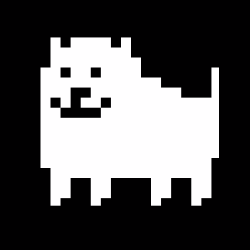

Meet the Team!
This here is the team who made the site--or, rather, since the site was only really by Me, Myself, and I...I guess just some people who helped or inspired me in ways? And me, I suppose.
Web Developer
I'm a student at Dallas College, and currently I'm setting out to get experience in software development and hopefully make a career out of it.
Class Professor
Stephen Herd is the professor of my class and he taught me how to make this entire website. Also, he's generally a chill guy.
Inspiration
Robert F. "Toby" Fox (born October 11, 1991) is an American video game developer, composer, and voice actor. He is best known for developing the role-playing video games Undertale and Deltarune — both of which received critical acclaim. Undertale has received nominations for a British Academy Game Award, three Game Awards and D.I.C.E. Awards.